“Writer Jekyll” - Documentation by “Adventure Themes”
“Writer Jekyll Theme”
Created: February 20th, 2015
Updated: February 20th, 2015
By: Adventure Themes
Thank you for purchasing Writer theme. If you have any questions that are beyond the scope of this help file, please feel free to contact us. Thanks so much!
Table of Contents
A) Introduction - top
Writer Theme is a responsive template focussed on typography, minimal design and quality photography built using the Jekyll platform. For all information about Jekyll you should refer to the Jekyll documentation.
This documentation is inteded to explain the features of each individual page template and the data that is required to create a site just like the demo. Below you will find an explination of the site configiration _config.yml and any Front matter that is included within the individual page templates.
B) Setup & Install - top
If you have used Jekyll you should first visit the Jekyll documentation and download the Jekyll software
Your download from ThemeForest will include a folder called theme files, this provides everything you need to have an exact copy of the theme preview setup within seconds.
First Time Setup
The Jekyll software runs on the command line, the first step is navigating to the theme files folder you just downloaded. Use the change directory command from your command line and specify the path to the downloaded files. The example below will vary depending where you extract your downloaded zip files.
$ cd Writer/theme-files
Running the Jekyll Server
Once you're located within the folder you downloaded you can run the jekyll serve command to start a local server to view the files.
$ jekyll serve
Navigate to http://localhost:4000 in your browser to see the website. In the next section we will look at the site configuration in detail, when changing these settings you will need to restart the jekyll server.
Restart the jekyll server
You may need to restart your Jekyll server when making changes to the _config.yml file. You can do this by using the keyboard command Ctrl + C and the re running jekyll serve to start the server with the new changes.
C) Site Config - top
A complete run through the _config.yml file that powers writer theme. More information about the _config.yml can be found on the Jekyll configuration documentation
title: Your website title
The title is used on each page within the head and title tag. The title tag is used for the name of your tab within the browser.
email: example-email@domain.com
This email is used for the mailto link within the post page footer. see Single Template Footer
description: 'Your site description'
The description is used within the head of each page for your `meta description` whenever there is not a seperate page specific excerpt included. The meta description is indexed by search engines and used by services like facebook when being shared.
url: "http://your-website.com/" # the base hostname & protocol for your site
The full URL for your site. This is used within the site to ensure that all of the permalinks are correct.
baseurl: "/blog" # the subpath of your site, e.g. /blog
If You would like to use this theme as a sub path of a larger site you must specify this here. The example uses a subpath of /blog.
permalink: :title
The permalink decided what the url of your posts will be. By default Writer uses the :title permalink this will cause a post to have a link of http://your-website.com/the-post-title. This can be changed for the whole site for example you may want /post/:title or it can be changed on an individual post basis, see Post Template for more information on front matter for posts.
enable_retina: false
This setting is used to decide if you would like to enable high resolution retina ready images throughout the site. Set to true if you are using retina images. For every image you will need to provide an image twice the size with the format my-image@2x.jpg. Visit the documentation for more informaton
nav_list: Example : ['Link Text', ' Link Relative URL', 'Font awesome Icon'] --- About : ['About', '/about/', 'fa-anchor'] Contact : ['Contact', '/contact/', 'fa-plane'] Author : ['Author', '/author/michelle/', 'fa-user']
The Nav list is used to generate the off site drawer navigation. You can create as many links as you need for your website. Any page included in the example format will show in the navigation. Each link should consist of an array, with the first item being the link text, second being the relative url to the page and third is the name of a font awesome icon (if you are using them/leave empty if not). You can find the name of more font awesome icons in the documentation.
While developing remember that any new information added to the _config.yml file will not be updated unless your restart the Jekyll server.
footer_links:
About: ['About', '/about/']
Writer: ['Writer 2015', '/about/']
The Home, Home-alternate and Category template include a small footer with some links. These links are intended to be internal links within the site. You can include up to four links, using the same format as the navigation links above. The first item being the link text, second being the relative url to the page.
single_footer: A small one liner footer for single pages
The single page template makes use of a small footer, this text can be chosen here.
D) Page Layouts - top
There are a number of diffrent page layouts that can be used.
- Navigation
- Home
layout: home - Home Alternate
layout: home-alt - Home Alternate 2
layout: home-alt-2 - Page
layout: page - Post
layout: post - Post with Sidebar
layout: post-sidebar - Category
layout: category - Author
layout: author - Contact
layout: contact

Navigation - Open
The site navigation is open and closed via the burger menu icon in the top left had corner of each page. The Icon is on every page so the navigation is always accessible. To edit the links that appear within the navigation they need to be added manually within the site configuration file _config.yml, view configuration information for further details and an example.
Home Layout
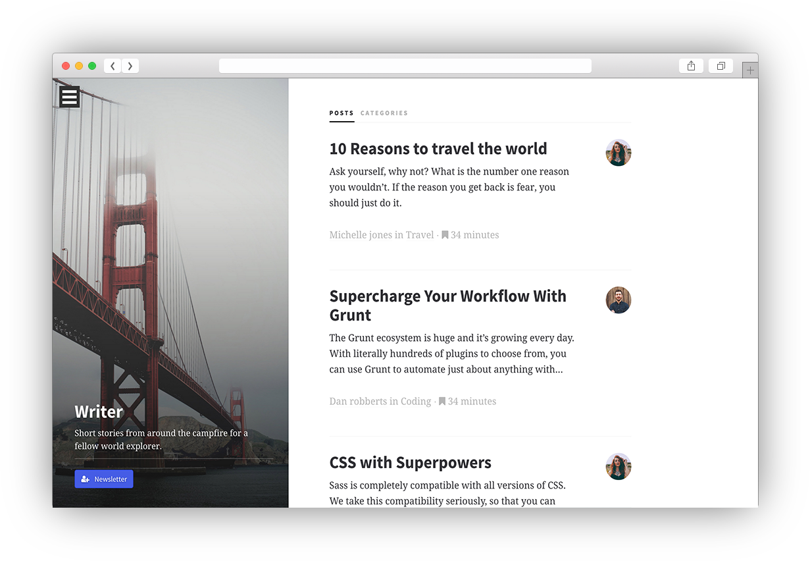 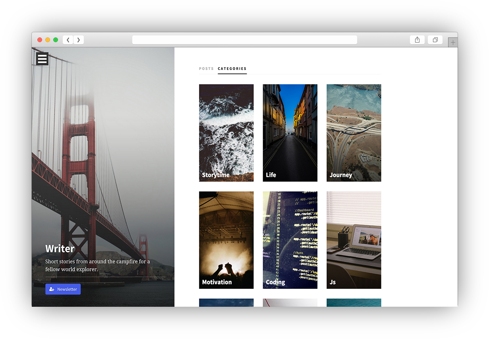Home Layout
The Home layout loops over both posts and categories and supports the signature writer sidebar. The sidebar uses information from the page Front Matter to dynamically fill the content. See an example and explanation of each itme below.
Example Jekyll Front Matter
--- layout: home feature_image: feature-san-fran title: Writer desc: Short stories from around the campfire for a fellow world explorer. include_cta_btn: true cta_text: Newsletter cta_link: about/ cta_icon: fa-user-plus ---
Setting a Featured Image
feature_image: feature-san-fran
The featured image decides which image will be used for the background of the sidebar. This relates to the file name of an image located within the 'img/' folder. The image you choose should be placed within the 'img' folder and have the file extention .jpg .
Setting the Title and Description for the sidebar
title: Writer desc: Short stories from around the campfire for a fellow world explorer.
The title and desc are both used to populate the sidebar. Any layout that makes use of the sidebar can have a seperate title and description. There is a h1 title and short description below in a p tag.
Sidebar Call To Action Button
include_cta_btn: true
If your would like a CTA button to show, set the include_cta_btn to true and fill in the other variables below. Otherwise if you dont want to use a CTA button set it to false and it will not be displayed.
cta_text: Newsletter
The text shown on the button
cta_link: /about/
The relative URL that the button will link to.
cta_icon: fa-user-plus
If you would like to use an icon for this button use the name of the font awesome icon.
Posts and Categories
The homepage loops over the posts and categories within your website, the information is generated form the Front Matter of the respective items. Category Post see each item for more information.
Category Thumbnail Image
The images for the category are chosen by naming a file 'category-thumbnail.jpg' for example 'motivation-thumbnail.jpg' would be used as the image for the motivation category.
Home Alternate
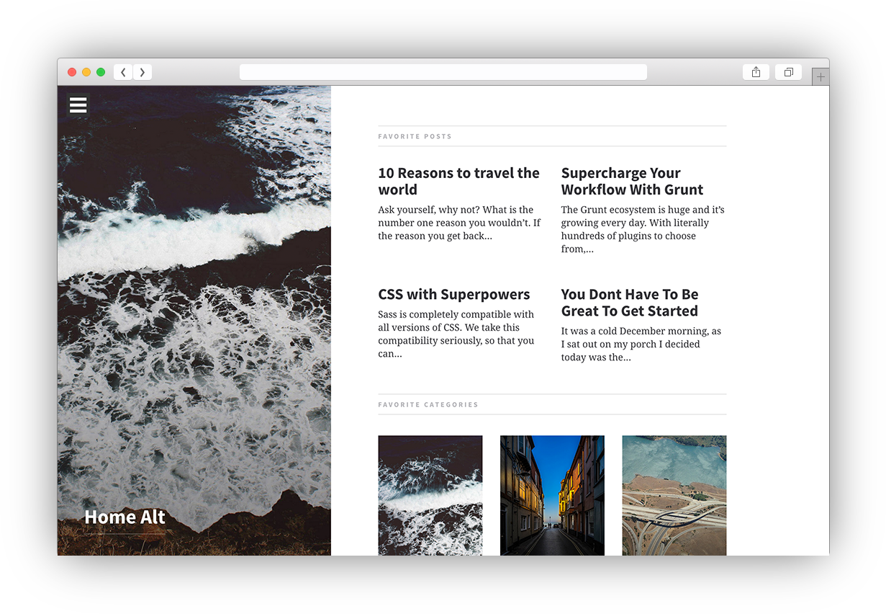Home Alternate Page
A alternate home page that dispalys both posts and categories.
Example Jekyll Front Matter
--- layout: home-alt title: Home Alt feature_image: feature-sea include_cta_btn: false ---
This font matter follows the same uses as the home layout. View Home Layout for more information. In this example we have chosen not touse a description and to not show the call to action button.
Home Alternate 2
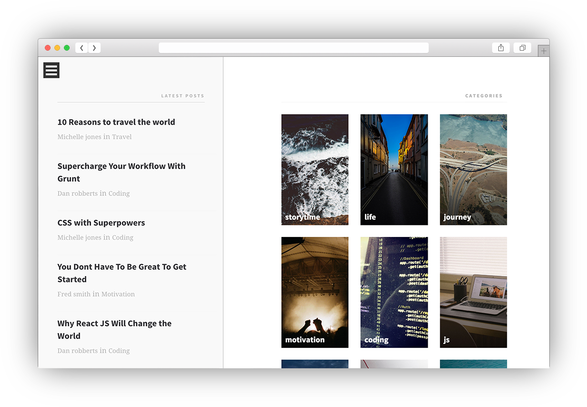Home Alternate Page 2
A second alternate home page that shows both posts and categories without the featured image background.
Example Jekyll Front Matter
--- layout: home-alt-2 title: Home Alt 2 bodyclass: alt-home post_count: 8 ---
bodyclass: alt-home
The bodyclass Front Matter can be used to add a specific class to the body tag of any layout. As this alternate page overrides the normal featured image sidebar, this frontmatter controls that. Ensure the bodyclass is set to alt-home to ensure this page is styled correctly.
Max Posts on Page
post_count: 8
Post count controls how many posts should be displayed on this page.
Single Page
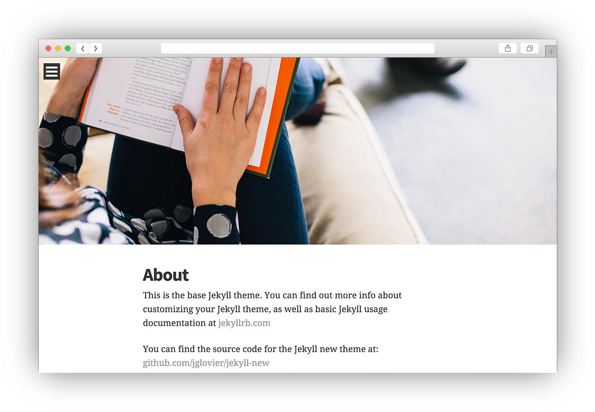Single Page
A multipurpose single page. Full width content with a footer (controlled via the site configuration see config)
Example Front Matter for Single Page
--- layout: page title: About permalink: /about/ feature_image: feature-book ---
Setting a Featured Hero Image
feature_image: will control what image is used at the top of the single page, this should be the name of an image file within the 'img' folder. The featured image for this example can be found in the img folder and is called feature-book.jpg.
Choosing a custom Permalink
You can choose a custom permalink for this and any other page. In this example we have used '/about/' this will cause this page to be assessible at 'http://your-site.com/about - See the permalink documentation for more info about setting custom permalinks wihtin Jekyll.
Post Page
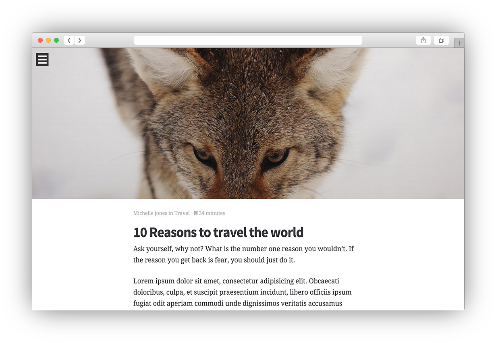Post Page Footer
 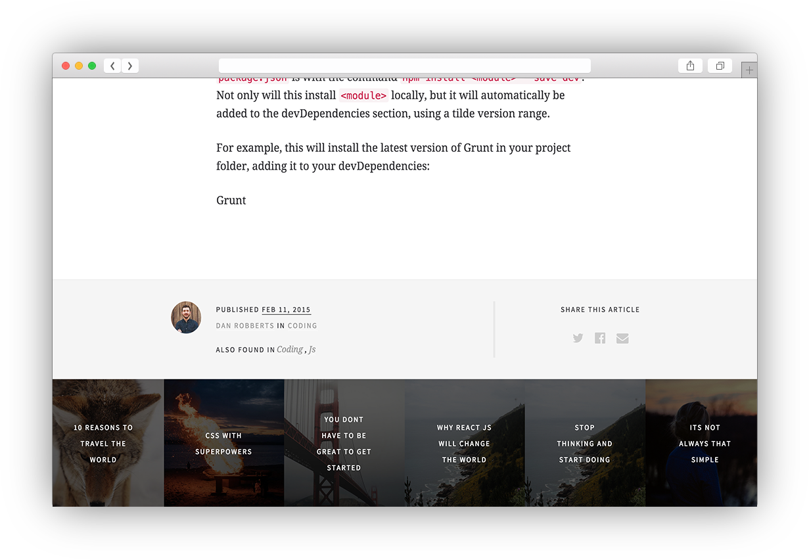
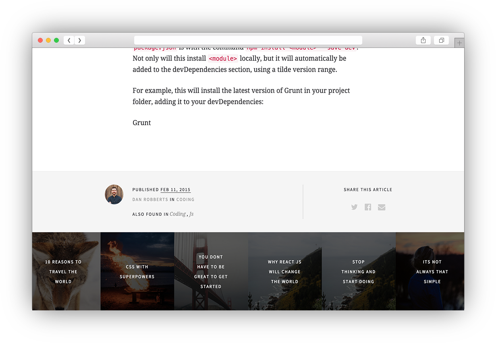
Post Page
Example Front Matter
--- layout: post title: "10 Reasons to travel the world" date: 2015-02-11 08:50:28 categories: travel storytime author_name : Michelle Jones author_url : author/michelle author_avatar: michelle show_avatar : true read_time : 34 feature_image: feature-wolf show_related_posts: false square_related: recommend-wolf ---
Default Jekyll Post Variables
title: "10 Reasons to travel the world" date: 2015-02-11 08:50:28 categories: travel storytime
The Title, Date and categories are default post variables that Jekyll uses, more information about these can be found in the post documentation. The remaining variables are custom to writer and are exaplained below.
The following variables are used both within the single post page and anywhere thoses posts are used, for example looping over posts on the home page.
author_name : Michelle Jones
The name of the author to be dispalyed in the meta information about the post, both before and after the post aswell as on the homepage/category pages etc.
author_url : /author/michelle
The author name is a hyperlink, the author URL is intended to be a relative path to an author page.
author_avatar: michelle
The name of the image to be used for the authors avatar displayed within the footer of the post and when looped over home/category page etc.
show_avatar : true
If you would prefer the avater to not be displayed when being looped over and only be used on the single page this can be set to false here. The avatar is always shown on the post page but can be hidden on home/category pages etc. This is useful to set to false if you are using this as a single writer.
read_time : 34
Set a manual reading time in minutes for this post. The reading time is displayed within the meta information at the top of a post and when being looped over on the home/category page etc.
feature_image: feature-wolf
To set a featured hero image for a post, use the of an image. Ensure that the image you are using is of a .jpg format and within the img folder of the site.
show_related_posts: true
The recommended posts section of the footer can be turned on or off for each individual post. Set to false to not show any related post recommendations on this post.
square_related: recommend-wolf
This is the name of the image to be used when other posts show this one as a recommendation. To ensure correct sizing this image should should be a square (1:1 aspect ratio) and of a minimum size of 800x800.
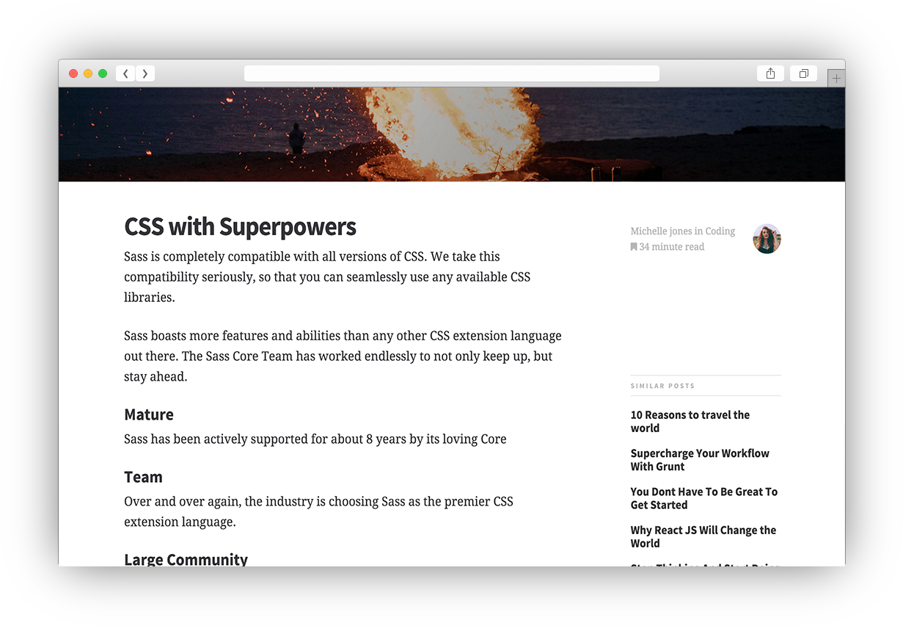
Post Sidebar Page
A varaition on the standard post page that includes a sidebar.
--- layout: post-sidebar ---
The sidebar variation uses the same Front Matter variables as the standard Post layout, the only difference is specifying the layout as post-sidebar.
Related posts will automatically fill the sidebar, this uses a built in matching algorithm with site.related_posts .
By default, these are low quality but fast to compute. For high quality but slow to compute results, run the jekyll command with the --lsi (latent semantic indexing) option.
Category Template
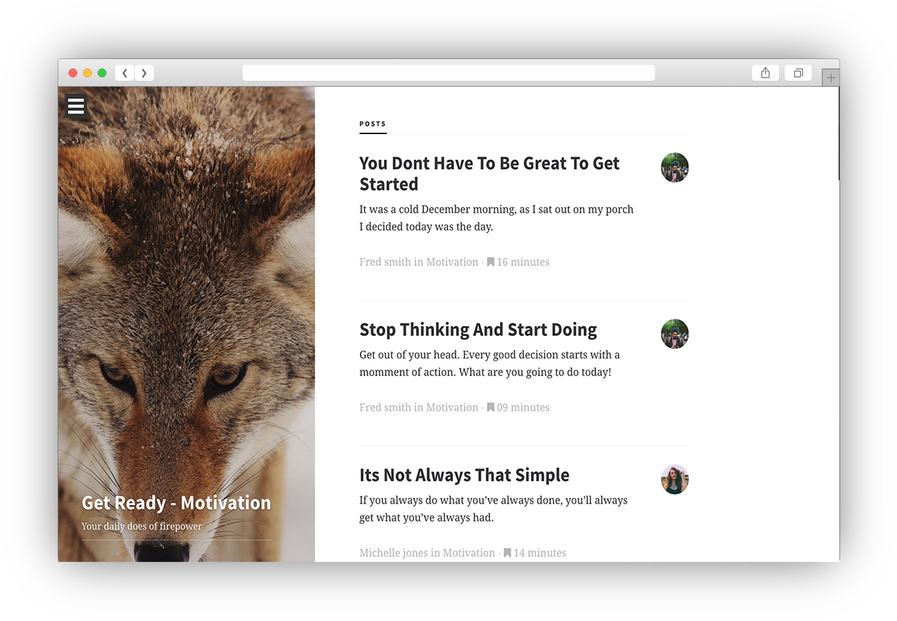Category Template
Creating Categories
When you create a post within jekyll you are able to add a list of categories for that post. This does not automatically create a page for that post so you will need to do that mnaually by creating a page with the category layout within the category folder. To keep your categories organised with clean urls each category should be within its own folder, the folder should be named that of the category for example. In Writer there is a a category foler, within that folder there are nine other folders, one for each category(Coding, Js, CSS, journey, Leadership, Life, Motivation, storytime, travel). Inside each folder you should create an index.html file with the category Front matter shown below.
Creating Category Page
--- layout: category category: motivation title : Get Ready - Motivation feature_image: feature-wolf desc: Your daily does of firepower ---
Once your folder and file are inplace you can set a featured image, title and description for the sidebar of that category. This example is a index.html file within a folder called motivation within the category folder. You can also you the CTA button font matter if you would like a button to be displayed within the sidebar.
category: motivation
We need to directly specify which category this relates to even though it is within the folder. This is used so we can show the correct posts for this category.
title : Get Ready - Motivation feature_image: feature-wolf desc: Your daily does of firepower
Set page specific title and description. Set a featured image by specifying the image name and use a .jpg extention.
Author Page Template
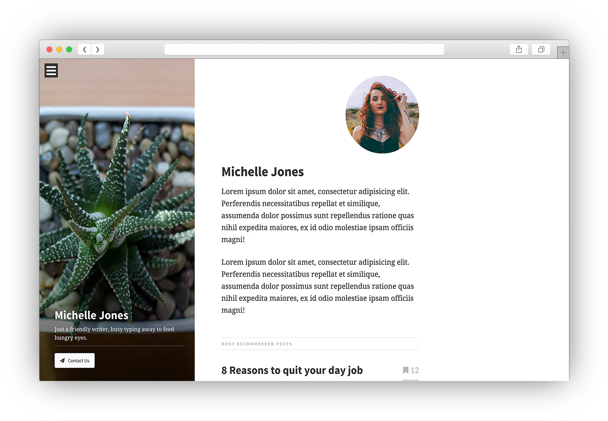Author Page Template
Example Front Matter
--- layout: author title: Author permalink: author/fred/ feature_image: feature-wolf title: Fred Smith author_avatar: fred author_name: Fred Smith fav_posts: post_1 : ['Post Title', 'Relative link to post', 'Short Post Excerpt'] post_2 : ['Post Title', 'Relative link to post', 'Short Post Excerpt'] ---
The author page makes use of the sidebar, with feature image, title and option for CTA button.
Setting favorite posts for an author
By using the Front Matter fav_posts you can list a number of posts to be dispalyed on the author page. As there is no automatic way to do this in jekyll you need to list them manually. There is a ruby hash with a list of posts. Each post contains an Array consiting of the title of the post, the url of the post and a short excerpt of that post.
author_avatar: fred
Author Avatar is the name of the image you would like to use displayed on the right hand side above the content.
Contact Template
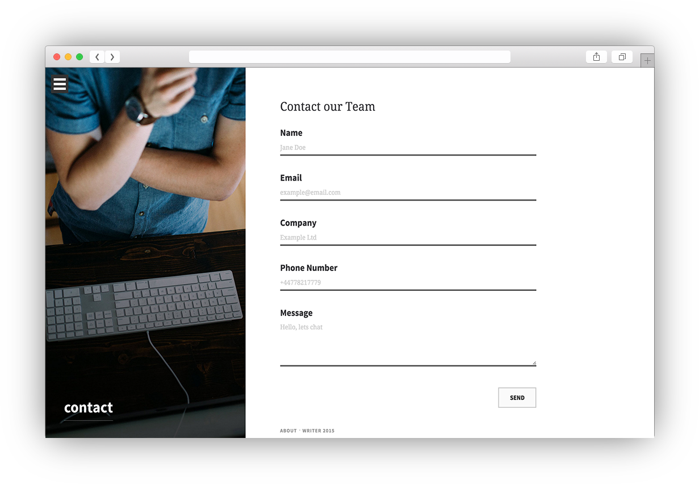Contact Template
--- layout: contact title: contact permalink: /contact/ feature_image: feature-laptop form_action: form_heading: Contact our Team ---
Setting the form action
form_action can be used to specify the url this form shoudl be submitted to. As Jekyll is a static site generator this template does not include any functionality to store this information. We recommend Form Keep the fastest way to get your form up and running on a static website.
Customising the form
If for any reason you do need to customise the form you will need to do so in the layout file itself. includes > contact-form.html
E) Sources and Credits - top
- Unslash - Stock Photography
- Death to the Stock Photo - Stock Photography
- Retina.js - Retina Image Support
- Bootstrap - CSS Framework
- jPanelMenu - Slide out navigation
- Animate.css - CSS Animations
- bourbon.io - Sass Mixins
- uifaces - User Icon examples
Adventure Themes